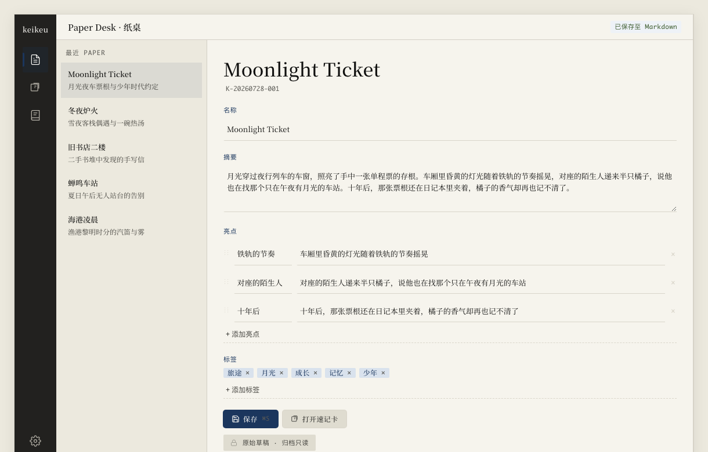

v0.5 不扩大 keikeu 的产品边界，只把 Daily Card、Paper、Flashcard、Library、Vault、迁移与 Core 恢复页面整理成同一条安静、清楚、可信的本地创作路径。签名、公证与公开分发明确留给 v0.6。
v0.5 的完成标准很土：用户马上知道哪里可编辑，不怕点错导航，保存与放弃符合直觉，鼠标和键盘都顺手，连续使用半小时不烦，正常交互不会丢内容。
v0.5 的价值不是增加页面，而是让用户从 Daily Card 到外部编辑器的每一步都能预测下一次点击会发生什么。所有工作必须服务于现有 1 条主路径，不能借 UI 改造扩展产品定位。
主路径固定为 Daily Card、新建 Paper、整理并保存、进入 Flashcard、回到 Library、再前往外部编辑器。Paper 是主工作台，Flashcard 是专注阅读面，Library 是检索与组织面，三者不新增第二套内容来源。
本轮明确排除 AI 写作、云同步、账号、社区、数据库、Router、Pinia、UI kit 与拖拽库。可分发的 macOS alpha、签名、公证、安装包与跨版本兼容性证据进入 v0.6，不占用 v0.5 的验收预算。
Paper 必须让用户在 5 秒内看懂哪里可编辑、哪里只读、当前是否保存。保存的唯一语义是建立新 baseline，失败或结果未知都不能擦除用户正在看的内容。

编辑区只包含名称、Summary、Highlights 与 Tags。输入以横线、留白与纸面层级组织，原始草稿显示锁定状态。Highlights 支持新增、删除和鼠标或触控板拖动排序，v0.5 不承诺键盘重排。
任一受控字段偏离最近成功保存的 snapshot 后，顶部显示未保存。保存按钮与 Cmd+S 调用同一函数，只有成功结果才能更新 baseline。外部修改、stale snapshot 与 commit_unknown 继续遵守 v0.4 边界。
dirty departure 只问一个问题：放弃最近保存之后的改动，还是留在原地继续编辑。去掉「保存并前往」后，导航与保存不再被一个对话框悄悄捆在一起。
恢复最近一次成功保存的 baseline，再执行原本的导航、Paper 切换、Vault 切换或关闭窗口。
取消原动作，留在当前 Paper。内容、当前页面与 baseline 都不改变。
前往 Flashcard 或 Library、切换或新建 Paper、切换 Vault 与关闭窗口都进入同一个 navigation guard。放弃更改会恢复最近一次成功保存的 baseline 后再执行原动作，继续编辑则取消原动作且不改变当前内容。
Tauri production 使用官方 dialog plugin 的二选一确认并设置明确按钮文字，浏览器开发环境才使用 window.confirm fallback。正常交互保证不丢内容，但进程崩溃、断电与 mutation 结果未知不纳入本轮承诺。
commit_unknown 不自动重试。
Flashcard 负责一次只看一个记忆单位，Library 负责回来时不要忘记用户刚才在找什么。两页都必须消费最近成功保存的 Paper，不能读取另一份前端临时真相。
Flashcard 第 1 张只显示 Summary，第 2 张开始每张只显示 1 个 Highlight。Highlight 卡片可手动展开 Summary context，默认收起。每次进入从第 1 张开始，dirty Paper 必须先经过离开保护。
Library 不重做功能，保留 scope、search query、sort order、active item、batch selection 与 scroll position。返回时恢复这些内存上下文，成功切换 Vault 或应用重启后重置，不新增偏好存储。
全局视觉不只包含三个主页面。Vault、迁移、Daily Card、loading、empty、Core blocked 与 recovery 页面必须看起来属于同一个产品，否则用户最需要信任时反而会进入另一套界面。
生产实现沿用最终原型的暖纸色、近黑文字、墨蓝焦点、暖灰分隔、衬线标题与无衬线控件。删除 demo 数据与设计原则面板，不使用渐变、玻璃、硬阴影、卡片套卡或装饰性圆角药丸。
本轮真实窗口验收只覆盖 1220×780 与 920×680。所有页面检查横向溢出、文字裁切、焦点可见性、动作层级与 reduced motion。视觉调整不得改动 Python Core、Markdown schema、DTO 或 JSONL protocol。
v0.5 同时建立一条轻量工程 routine，让以后每个 keikeu 变更都有相同的读图、Git、测试和交付证据。Routine 是项目本地 skill，不是新的流程平台。
CP0 创建 .agents/skills/keikeu-routine，仅含 SKILL.md 与 agents/openai.yaml，并使用 skill-creator quick validation。它引用 AGENTS、SPEC 与 RULES，不复制权威，不增加 Git hooks、CI gate、后台 agent、scripts 或 assets。
施工依次为 CP1 Paper、CP2 baseline 与离开保护、CP3 Flashcard、CP4 Library context、CP5 全页面视觉、CP6 dogfood。每个 checkpoint 只完成一条行为链，先过 focused tests 与真实尺寸，再进入下一步。
| CP | 交付 | Exit gate |
|---|---|---|
| 0 | Authority、routine、dialog contract | skill validation + CP1 可用 |
| 1 | Paper Desk | 5 秒识别编辑区 |
| 2 | Baseline、dirty guard | 保存与放弃语义稳定 |
| 3 | Flashcard | Summary-first、1 highlight |
| 4 | Library context | 返回不乱，换 Vault 重置 |
| 5 | Whole-app visual | 全部页面同一语言 |
| 6 | Two dogfood runs | 无 P0/P1，修完 top 3 |
v0.5 的完成标准是用户连续使用 30 分钟仍觉得顺手，并且正常交互不会丢内容。自动测试证明实现没有明显回归，但不能替代真实 .app dogfood 与开发者接受。
每个 UI checkpoint 保留 focused Vitest、1220×780 与 920×680 截图，涉及桌面 API 时运行 Tauri .app smoke。Vault、迁移、delete 与 recovery 只在 fixture、copy 或 synthetic data 上验证。
最终构建唯一可识别的 keikeu .app，连续使用 30 分钟，修复全部 P0/P1 与最烦的 3 件事，再完整重跑 30 分钟。macOS 27 beta 与 Xcode 27 beta 获准用于工程 build 和 dogfood，但不自动构成 release 兼容性证据。
| 原生确认差异 | 官方 dialog plugin + 真实 .app smoke |
| baseline 漂移 | 只有成功保存更新 baseline |
| 跨 Vault 旧上下文 | switch 与 restart 明确 reset |
| beta 工具链误读 | 工程批准与 release 证据分开 |